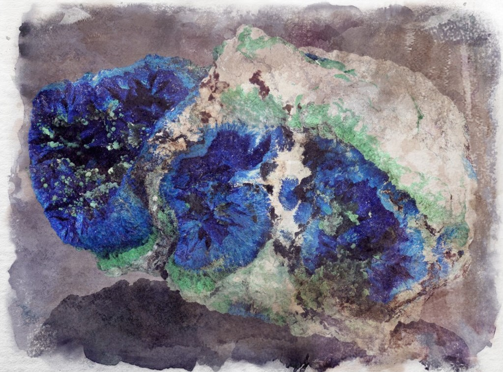

Azurite
A volcanic rock formed by lava, it is a soft, deep blue mineral typically powdered for use as pigmentation, it quickly weathers into a blue-ish green when left in the open air or heat. It is an ore of cyprium.